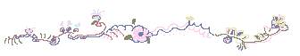
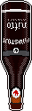

What is this?
I started building websites for fun when I was around ten or so years old because the internet was new and weird at the time and so was I, I guess.
This site was created in November 2022 as an experiment and creative outlet. It has changed a lot over the years.
More recently I found a bunch of retro-style websites reminiscent of the 90s and wanted my creative outlet back.
This website is coded with love and mild frustration by Yours Truly using Visual Studio Code and GitHub. I make the graphics using Paint Shop Pro 7 and Gimp. The site is viewable on a mobile device but is best viewed on a larger screen of some kind, I guess a PC or whatever.
Inspiration and resources
- Dryad Glen -- Springtime inspiration!
- lazybones -- One of my first sources of inspiration.
- kobrakid -- Many of the content ideas for my site came from here.
- inkcaps -- Beautifully curated graphics and whimsical content! I love it!
- bitmapdreams -- The most beautiful pixel art I've ever seen.
- myrrh -- Interestingly designed site with great links.
- Ezgif.com -- Make animated GIFs.
- flamingtext.com -- Free logo designs.
- remove.bg -- Easily remove backgrounds from photographs.

The updates log
- 2025-03-15 This is not the spring theme I had envisioned... but it's something.
- 2025-01-10 What year is it? Is this a website yet?
- 2024-12-05 Who knew all the lists page would need was some brightness for me to go from hating to loving it.
- 2024-11-28 Hey. It's the holidays. Let's party.
- 2024-11-18 The beer page got a reboot.
- 2024-11-16 I made this list! Wow! Also made some CSS tweaks.
- Aaaaaand that's it for now.
Status or whatever
2025-03-15
- Gray
- Thinking about yoga and cleaning
- Maybe tomorrow I will garden
2025-01-26
- Feeling content
- Lord of the Rings is on the television
- I can smell a candle
2025-01-08
- I am overstimulated
- Hearing a virtual lecture
- "Apples. Apples."
2024-12-05
- Feeling tired, in a good way
- Listening to kitchen sounds
- A lot of ideas
2024-11-28
- Who even cares?
- Drinking coffee
- I love my bubbly Christmas lights
- Looking forward to work, weirdly
- I wonder if we got enough rain last night
- Trying to stay awake


I worked at a beer bar for a good chunk of my life when I was a post-college, directionless young person. I look back fondly on those years, mainly because of the people I met and the things I learned, but also because I developed a taste for craft beer. Here I will try to remember and describe some of my favorites.
I also have some interesting attempts at making beer-related pixel art. Enjoy my amateur creations!
Yards Tavern Spruce holds a special place in my heart because it was the first beer that I really liked and that had a flavor I could recognize. It really does have a spruce taste to it and this is how I learned that I enjoy floral beers.
Tröegs Mad Elf: What a doozy! 'Tis the season! I can have maybe one of these per year because they are mighty strong in both alcohol content and flavor. It's also kind of fun that the batch is slightly different every year.
 Left Hand Milk Stout Nitro: As if the milk stout could get any better! Make it smoother and put it in a fun bottle that you get to turn upside down into a glass and watch the cascade. Almost as fun as drinking it!
Beers to add
- St. Bernardus [any of them]
- Half Acre Daisy Cutter
- Goose Island Sofie
Dare you enter the woods... ?


Forest logs
At some point I started taking a picture of (roughly) the same spot in the woods whenever I went out there, plus a picture of myself. I didn't keep up with it very consistently, but here are the pictures I have.
March 9, 2025

January 20, 2025

July 2, 2024
June 9, 2024
May 28, 2024
An ode to local eggs
Variety of shapes and colorsExtra-orange yolks!
Knowing the chickens are living the good life
Supporting a local business
Recipes I've tried, some I haven't
-
Cavatelli and broccoli, the way mom used to make
This was probably my favorite thing my mom used to make, besides baked ziti.
Ingredients:- Cavatelli (pronounced gava-DEEL for effect) or any short pasta
- Broccoli (fresh or frozen)
- A shit ton of olive oil (pronounced ollie-OOL for effect)
- A shit ton of garlic
- A shit ton of salt
- Black pepper
- Red pepper flakes if you like
Boil or sauté the broccoli
Throw the cooked broccoli and pasta into a large pot with all your olive oil, salt, pepper, and garlic. Cook for a while, add seasoning and olive oil as needed. It's done when it's hot and seasoned to your liking. - Easy Chicken Ramen Soup
Easy enough. I used broccoli and other veggies instead of chicken. I think I would like it spicier. - Indian Coconut Butter Cauliflower
I've made this twice now and it is becoming a favorite! Pretty straightforward and delicious. Easy to modify depending on what vegetables I have around. I added rutabaga to the cauliflower this time (January 2025). - Lemon Posset
This was an interesting adventure marked by working with a friend, not fully understanding how to zest a blood orange, not having enough heavy cream so using some oat milk, not knowing if freezing heavy cream makes it split (it does), and not knowing if we'd cooked the cream slowly enough (we hadn't). - One-Pot Spinach-Artichoke Chicken Pasta
Very easy. Will make again. Maybe more seasoning next time. - Pasta E Fagiole Soup
An Italian classic! I somehow used too much pasta. Very good with parmesan cheese and a big ol' French table loaf. - Shrimp Cacciatore
You know how some recipes are not written very well and are difficult to follow? This was not one of those. The instructions were quite clear. 10/10 on recipe-writing. I subbed Halloumi cheese for shrimp; it had a stronger flavor than I expected but overall the dish was good. - Spinach Artichoke Strata
Good but LARGE. - Super Creamy Gochujang Pasta
Made February 2025. I LOVED this! The Gochujang adds a really interesting flavor when mixed with cream. - Vegan Dinner Rolls
Haven't made these, but sounds like a good thing to bring to a party. -
The veggie sandwich they used to make at the restaurant I used to work at.
This one has a story. When I worked in a restaurant they made this delicious veggie sandwich that I ordered all the time. Then they stopped making it. I was sad, but my friend working in the kitchen said, "Briana, you know the ingredients. You can make the sandwich yourself." "But it won't be the same!" I protested. Fast-forward to many years later, when I finally decided to try making this sandwich myself. It absolutely was not the same. The ingredients are:
- hummus
- feta cheese
- kalamata olives
- roasted red peppers
- tomatoes
- mixed greens
- focaccia
My theories on why it's not the same when I make it:
- I can never find good focaccia at the store.
- The hummus at the restaurant was made in the restaurant. I will never be able to buy or make that exact hummus.
- Typically when I used to order the sandwich I would order it with a side of fries, and the fries at this place were delicious. I will never be able to replicate those fries.
So that is my sandwich story.
Food lists
Favorite restaurants
- Lucky's Last Chance
- Tria
- Monk's Cafe
- Standard Tap
- Hilltown Tavern
- White Yak
Pantry essentials
- Butter
- Coconut milk
- Curry paste
- Oat milk
- Olive oil
- Tomato paste
- Vegetable stock
Visit another kitchen
Random food thoughts
- I have learned from cooking never to buy pine nuts. Pine nuts are typically included in recipes as like a last-minute add-on for some extra flavor or something. I have to admit, I like their flavor. But I don't like spending stupid money on them only to use like 26 of them and then have about 8,200 left in the package that I will never use. Or I start eating them until I feel sick.
- Drinking a glass of wine and cooking a meal might be my favorite combination of activities.
- I often like to eat foods that are not traditionally considered breakfast foods for breakfast, like pasta.
- When I moved from New Jersey to Pennsylvania I was teased for pronouncing 'coffee' like 'kaw-fee' and so I toned it down. I still pronounce 'chocolate' like 'chaw-klet' and refuse to change.
- I clean while I cook.
- I hate baking but about once a year I forget how much I hate it, and then I am reminded again the minute I get swept away in a cookie recipe and find my floor covered in flour.
Currently reading
So... I don't remember where I found this book but I think it was in one of those little free libraries or in a box on the sidewalk. Regardless, the book is incredibly old and is one of 1,050 copies printed (according to a statement on the inside cover). Some research revealed that this book is volume 5 of an 8-volume set, and is somewhat valuable if you have the entire set in good condition. Mine is not a full set and is in very bad condition.
So far this book has been a pleasant surprise. I borrowed it from the library wanting to learn how to be a witch or something, but instead am receiving stories about witch hunts and how they are comparable to modern-day 'witch hunts' (think the Communism McCarthy trials and things like that). Basically witch hunts are used by powerful people to dehumanize others so they can stay in power, and they continue to this day.
A shrine to literary animals
- Kazak the Hound of Space
Kazak is a dog who appears in Kurt Vonnegut's The Sirens of Titan and Breakfast of Champions, probably as a different dog each time. There is also Kazakh the dog who appears in Galápagos and is also apparently a different dog, though I kind of thought of them all as the same dog in different universes. -
Jiji
Jiji is a cat in Kiki's Delivery Service by Eiko Kadono, one of my favorite books of all time. Jiji can talk to Kiki, who is a half-witch. The two go on adventures together and learn about growing up and becoming independent. -
Vlad the Impaler
A pet cockatiel from The Broom of the System who begins talking and causing chaos.
Favorite books
A zoomed-in family drama that makes me cry.
I accidentally selected this book to read at the beach and it was amazing. So beautiful and delicate.
Wildly hilarious and at least a little tragic.
Cozy and nostalgic stories, some of them very moving.
Reading logs
Books read in 2024
-
Pnin
by Vladimir NabokovSo goofy and fun. One of those books where there's no real plot; all of the events are regular day-to-day things that could happen to anyone, but described in a way that makes them hilarious and meaningful.
-
A Mind Apart: Poems of Melancholy, Madness, and Addiction
edited by Mark S. BauerSome insanely beautiful poems in here. A good way to feel sadness through the words of others.
-
The Cocktail Party
by T.S. EliotA cutesy little play with some funny quips.
-
House of Leaves
by Mark Z. DanielewskiWhat a zany adventure! I must have looked like a weirdo flipping around in this book and turning it upside down while reading it on the bus.
-
You Look Like a Thing and I Love You
by Janelle ShaneSome hilarious experiments with artificial intelligence. My favorite was when it was asked to generate new ice cream flavors and one of them was 'Chocoloate chocolate chocolate chocolate road.' 😂
-
Adventures of Huckleberry Finn
by Mark TwainBoth funny and sad. Twain is a trickster.
-
Maus I: A Survivor's Tale
by Art SpiegelmanInteresting new way to read about The Holocaust. Same devastatingly sad stories.
-
War and Peace
by Leo TolstoyTook me foreverrrrrrrrr but I was honestly kind of sad when it was over. Some great characters.
-
The End of Ownership: Personal Property in the Digital Economy
by Aaron PerzanowskiInteresting thoughts on how things like streaming services and whatnot are changing the way we interact with media. We don't buy things anymore; we license them. Is this going to cause problems? Yes and no.
-
East of Eden
by John SteinbeckWowee. I've read some Steinbeck in my life but this one was the real deal. Sad, beautiful, epic, and two of my favorite characters I've ever read.
Books read in 2023
-
Hallowe'en Party
by Agatha ChristieSo much fun! I think I imagined this would be tedious and weird because of its age, but how ageist of me. Supposedly this is not even one of Christie's best works but I adored it nonetheless and want to read more of hers. Honestly just so fun and funny! Nevermind that actually solving the mystery myself was probably impossible.
-
Just Ignore Him
by Alan DaviesInteresting look into the childhood of a comedian I admire. I discovered Alan Davies while watching cable TV in London and warming up to shows like QI and Taskmaster. Friend2 and I have particularly fond memories of getting back to our flat at night--arms loaded with unfamiliar snacks from the grocery store down the street--and popping on the telly to wind down and absorb some culture. I somehow found out that Davies had a painful childhood and, being always attracted to sad comedians because I somehow relate to their desperate need for everyone to like them, I decided to read his memoir. I remember it being very sad and sometimes amusing.
-
Lock In
by John ScalziI don't remember finishing this book because I hated it so much. Just not my style, I guess. The author tried very hard to sound snarky and it wasn't landing for me.
-
Kiki's Delivery Service
by Eiko KadonoPerfect, sweet, absolute gem of a book! I can't say enough how much I adored it. I literally wanted to become a witch when I read this and within days watched the movie.
-
Tortilla Flat
by John SteinbeckStandard sad Steinbeck. But the imagery of the California countryside sticks with me, and the fact that I felt sorry for the main characters despite their flaws.
-
Covered with Night
by Nicole EustaceHistory is not my strong suit but this was a really interesting look at the problematic relations between colonists and Native Americans. Completely different justice systems, all kinds of bias, corruption, etc. Very eye-opening. I didn't think I could hate colonialism more but here we are.
-
A Christmas Carol
by Charles DickensAnother surprise joy from what I expected to be a dusty old classic. I'd had a bad experience with Dickens after trying to read Great Expectations in high school with an English teacher who I despised. This was a much more pleasant experience and proves why it is such a classic.
Miscellaneous topics
- Big Bear Bald Eagle Live Nest -- Watch a real bald eagles' nest in real time!
- The Free Web -- Interesting article written by Jay on November 26, 2024
- The Gallery of Regrettable Food -- A fun look at recipes of old
- Radio Garden -- Listen to the radio all over the world!
To do
- Make a Games page
- Page for The Shore
- Cute book covers for the library
- Inspiration board
- Happy/sad/regular chart
Goals
- Travel without fear
- Finish a large painting
- Buy used whenever possible
- Learn Italian
Thoughts & Quotes
- My family had a shore house when I was a kid and I still vividly remember the sound of the seagulls and the way it felt to walk in the crab grass in our backyard. The sun is also extremely bright in these memories.
- My friends and I traveled to Montreal in June 2024 and I've officially been converted from someone who didn't understand the hype around poutine to someone who cannot stop thinking about the delicious mushroom poutine I had from a food truck.
- Haste makes paste. [my mom]
- Razors pain you; Rivers are damp; Acids stain you; And drugs cause cramp. Guns aren't lawful; Nooses give; Gas smells awful; You might as well live. [Dorothy Parker (1893-1967)]
Reasons the woods are better in the morning
- Less people
- More birds
- Dramatic sunlight
PC games I can remember but cannot find
- Police Sketch on Prodigy internet browser
- Kid Pix 2
- Disgruntled Ox [or something like that]
Cat nicknames
- Muffin
- Pumpkin
- Little Prince
- Little Beast
Favorite things
- Cooking and drinking wine
- My daily podcast and work
- My cat's warm, fluffy belly
- Hearing interesting birds
- Walking to the farmer's market
- Christmas Village
Hobbies
- Walking everywhere
- Cooking
- Painting
- Working on this thing
- Occasionally making candles
- Occasionally brewing beer
2024 things I did
- Got back into yoga
- Sang too much karaoke
- Got back out of yoga
- Went to Japan
 2025-03-14
2025-03-14
Unpin from taskbar: a poem
I am perpetually
Accidentally
Opening GIMP
2025-03-14
muse ariadne prompt week of mar 3rd: write about something you wonder if others do, too
Honestly I am not in a good creative mode right now, and I wonder if others also straight up tell themselves when they're not feeling creative. Or, I guess I wonder how consistently creative people handle their moments of non-creativity. I am a regimented person, usually, so I enjoy routine, and I recently told myself I would do one creative thing per day. It can be anything really: writing, drawing, maybe even cooking could count. Even if I just draw one line in my notebook, it counts as long as I am taking that moment to attempt to feel creative. So I'm pretty much forcing this one out of myself right now. I'm not even really following the prompt now. I just wanted to get something out for today, and I wonder if others do this. My logic is that staying in the daily habit of doing something like this will eventually lead to a day of free-flowing creativity! Whoop-dee-doo!
2024-11-30
muse ariadne prompt week of nov 25th: write about insides. this prompt mainly has bones/skeletons, muscles, flesh, structures in mind, but as always, take it where you please
My flesh is hard and scratchy this time of year. My bones? Probably fine. The muscles may bristle at the cold sometimes, but my bones are in there keeping things together. If only I could breathe in deep with every breath and provide my blood the necessary oxygen. But let's be realistic: sometimes we forget to really breathe.
2024-11-09
muse ariadne prompt week of oct 14th: tell a story you want to tell to future generations to come-- whether through a poem, a short story, an essay, a myth-like retelling, or something else
Dear future generations to come:
You will be bored on many days, in many situations.
It won't be that bad, though, so long as you don't allow it to be.
In your head is anything you want
And it's all there for your entertainment;
Just imagine where you want to be, and you're there.
Isn't that nice?
2024-11-05
muse ariadne prompt week of oct 28th: write about the sky— any aspect of it. color, feeling, temperature, shape (?), etc. write about a sky that inspires you or that exhausts you, or anything else you’d like
The sky these days is verrrrry bright and for over a month has not opened to dump any substantial amounts of rain on us. This has caused the creek in the woods to be low at best and dry at worst.
Welcome
Please enjoy these things I've made.